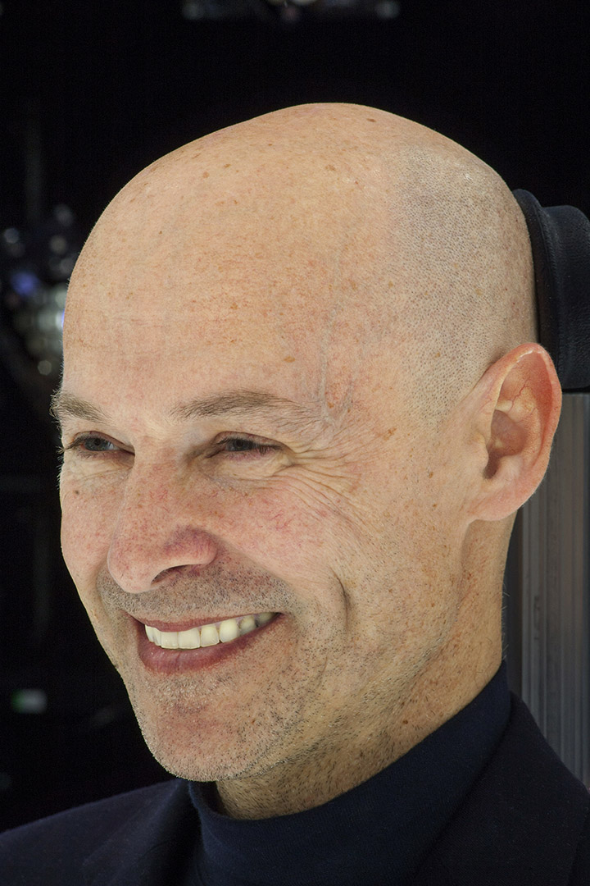
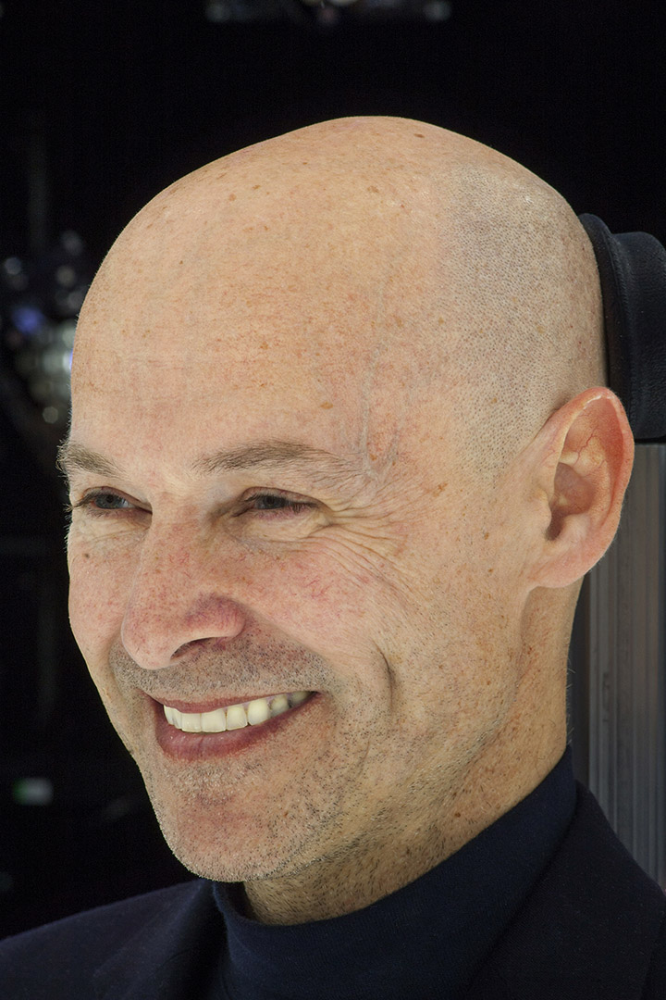

Keynote
Ming Lin, University of Maryland
Title: Reconstructing Reality: From Physical World to Virtual Environments
Abstract: With increasing availability of data in various forms from images, audio, video, 3D models, motion capture, simulation results, to satellite imagery, representative samples of the various phenomena constituting the world around us bring new opportunities and research challenges. Such availability of data has led to recent advances in data-driven modeling. However, most of the existing example-based synthesis methods offer empirical models and data reconstruction that may not provide an insightful understanding of the underlying process or may be limited to a subset of observations.
In this talk, I present recent advances that integrate classical model-based methods and statistical learning techniques to tackle challenging problems that have not been previously addressed. These include flow reconstruction for traffic visualization, learning heterogeneous crowd behaviors from video, simultaneous estimation of deformation and elasticity parameters from images and video, and example-based multimodal display for VR systems. These approaches offer new insights for understanding complex collective behaviors, developing better models for complex dynamical systems from captured data, delivering more effective medical diagnosis and treatment, as well as cyber-manufacturing of customized apparel. I conclude by discussing some possible future directions and challenges.
Bio: Ming Lin is an American computer scientist and the chair of the Department of Computer Science at the University of Maryland, College Park, where she also holds an endowed faculty position as the Elizabeth Stevinson Iribe Chair of Computer Science. Prior to moving to Maryland in 2018, Lin was the John R. & Louise S. Parker Distinguished Professor of Computer Science at the University of North Carolina at Chapel Hill.
Lin is known for her work on collision detection, and in particular for the Lin–Canny algorithm for maintaining the closest pair of features of two moving objects, for the idea (with Cohen, Manocha, and Ponamgi) of using axis-aligned bounding boxes to quickly eliminate from consideration pairs of objects that are far from colliding, and for additional speedups to collision detection using bounding box hierarchies. Her software libraries implementing these algorithms are widely used in commercial applications including computer aided design and computer games. More generally, her research interests are in physically based modeling, haptics, robotics, 3D computer graphics, computational geometry, and interactive computer simulation.
Keynote
Rachel Rose, ILM, and Naty Hoffman, Lucasfilm
Title: Real-Time Rendering At Lucasfilm: Working with The Coolest Toys In The Galaxy
Abstract: From 1980's point-and-click adventure games to the ILM StageCraft tool suite used for The Mandalorian television series, real-time rendering has been woven throughout Lucasfilm's history. The mix of game technology and feature film visual effects expertise has produced many unique projects at Lucasfilm, including the interactive theme-park ride Star Wars: Millennium Falcon – Smugglers Run, the Academy Award-winning virtual reality experience Carne y Arena, and the groundbreaking advances in virtual production culminating in capturing final pixels in camera using ILM StageCraft on The Mandalorian. We will discuss the technical challenges we faced on these projects, as well as the opportunity they afforded us to work with some of the coolest toys in the galaxy: eight-GPU monster PCs, pre-release virtual reality headsets, custom motion capture hardware, 20' high wraparound LED displays, and feature film assets from some of the world's most beloved media properties.
Keynote Speaker
Rachel Rose, ILM
Bio: Rachel Rose, an R&D Supervisor at Industrial Light & Magic (ILM), drives technology that aids artists in the creation and animation of characters for feature films. Rachel has a strong interest in the intersection of real-time technology and the film industry that started with her Ph.D. thesis on real-time motion synthesis. In her 12 years at ILM, Rachel has worked on a wide range of films, TV shows, and video games, including Rango (2011), Noah (2014), Rogue One: A Star Wars Story (2016), Star Wars: The Force Unleashed 2 (2010), and, most recently, as ILM Technology Supervisor for The Mandalorian (2019). Rachel is a member of the Academy of Motion Picture Arts and Sciences (AMPAS), and her work on BlockParty, a visual, procedural rigging system, earned her a Technical Achievement Award from AMPAS in 2018.
Keynote Speaker
Naty Hoffman, Lucasfilm
Bio: Naty Hoffman
is a Principal Engineer & Architect in the Advanced Development Group at Lucasfilm,
where he has helped drive real-time rendering technology on multiple projects including The Mandalorian
TV show, the Smuggler’s Run theme park ride, and the Virtual Reality experiences Secrets of the Empire
and Vader Immortal. Naty joined Lucasfilm in early 2016 after two decades in the game industry, during
which he played a key role in bringing advances such as physically based shading and cinematic color
grading to game production. Naty's contributions include graphics technology for celebrated game
franchises such as Call of Duty and God of War, core technology libraries for Sony's Playstation 3
console, and influential publications including the Physics and Math of Shading talks at SIGGRAPH and
the book Real-Time Rendering.
Keynote
Julien Pettré, Inria
Title: From Millimeters to Kilometers: Crowd Simulation Is a Matter of Scale
Abstract: A crowd is a gathering of individuals in one place reaching a significant level of density. It is generally accepted that crowd behavior is not the result of a common and centralized organization or will, but rather of the combination of the behavior of each individual among others. Thus, large-scale, sometimes fascinating-looking behaviors result from a set of local interactions between individuals. Similarly, as crowd simulation consists in designing algorithms that reproduce the behavior of real crowds, a whole set of approaches are based on the idea that it is enough to implement a small set of rules governing interactions between individuals to reproduce the behavior of large crowds.
In this talk, I propose to comment on the most advanced algorithms used today to simulate virtual crowds. While in the field of graphics, these solutions can be used to populate very large scenes up to cities several kilometers in size. We will see how we can guide each agent in the crowd from a few pixels that represent his neighborhood by mimicking the process by which we react to the visual perception of our own environment through our retina of a few millimeters in size.
Bio: Julien Pettré is a computer scientist. He is senior researcher at Inria, the French National Institute for Research in Computer Science and Control, in the Rainbow team. He received PhD from the University of Toulouse III in 2003, and Habilitation from the University of Rennes I in 2015. From 2004 to 2006, he was postdoctoral fellow at EPFL in Switzerland. He joined Inria in 2006.
Julien Pettré is currently coordinator of the European H2020 Crowdbot project (2018-21) dedicated to the design of robot navigation techniques for crowded environments. He is also the coordinator of the European H2020 Fet Open CrowdDNA project (2020-2024), dedicated to future emergent technologies for crowd management in public spaces. He previously coordinated the national ANR JCJC Percolation project (2013-17) dedicated to the design of new microscopic crowd simulation algorithms, as well as the national ANR CONTINT Chrome project, dedicated to efficient and designer-friendly techniques for crowd animation. His research interests are crowd simulation, computer animation, virtual reality, robot navigation and motion planning.
Keynote
David Morin, Epic Games

Title: Creating In-Camera VFX with Real-Time Workflows
Abstract:
This session will cover advancements in “in-camera visual effects” and how this technique is changing the film and TV industry. With software developments in real-time game engines, combined with hardware developments in GPUs and on-set video equipment, filmmakers can now capture final pixel visual effects while still on set – enabling new levels of creative collaboration and efficiency during principal photography. These new developments allow changes to digital scenes, even those at final pixel quality, to be seen instantly on high-resolution LED walls – an exponential degree of time savings over a traditional CG rendering workflow. This is crucial as there is a huge demand for more original film and TV content, and studios must find a way to efficiently scale production and post-production while maintaining high quality and creative intent.
Bio: David Morin is Epic Games’ Industry Manager for Media and Entertainment, where he spearheads efforts from the Unreal Engine team to further its development and adoption in the film and television industries. He also serves as the Executive Director of the Academy Software Foundation, where he works for the Premier Members to develop the use of open source software in the motion picture industry. Additionally, David is chairman of the Joint Technology Committee on Virtual Production, the Joint Technology Committee on Virtual Reality, and a past co-chair of the Joint Technology Subcommittee on Previsualization. He earned a B.Sc.A. in computer science from Laval University (Quebec City, Canada) and has participated in the development of motion capture and 3D software since “Jurassic Park” at companies such as Softimage, Microsoft, Avid Technology, Autodesk, and now Epic Games.
Bio: Rachel Rose, an R&D Supervisor at Industrial Light & Magic (ILM), drives technology that aids artists in the creation and animation of characters for feature films. Rachel has a strong interest in the intersection of real-time technology and the film industry that started with her Ph.D. thesis on real-time motion synthesis. In her 12 years at ILM, Rachel has worked on a wide range of films, TV shows, and video games, including Rango (2011), Noah (2014), Rogue One: A Star Wars Story (2016), Star Wars: The Force Unleashed 2 (2010), and, most recently, as ILM Technology Supervisor for The Mandalorian (2019). Rachel is a member of the Academy of Motion Picture Arts and Sciences (AMPAS), and her work on BlockParty, a visual, procedural rigging system, earned her a Technical Achievement Award from AMPAS in 2018.
Naty Hoffman, Lucasfilm
Bio: Naty Hoffman is a Principal Engineer & Architect in the Advanced Development Group at Lucasfilm, where he has helped drive real-time rendering technology on multiple projects including The Mandalorian TV show, the Smuggler’s Run theme park ride, and the Virtual Reality experiences Secrets of the Empire and Vader Immortal. Naty joined Lucasfilm in early 2016 after two decades in the game industry, during which he played a key role in bringing advances such as physically based shading and cinematic color grading to game production. Naty's contributions include graphics technology for celebrated game franchises such as Call of Duty and God of War, core technology libraries for Sony's Playstation 3 console, and influential publications including the Physics and Math of Shading talks at SIGGRAPH and the book Real-Time Rendering.
Keynote
Julien Pettré, Inria
Title: From Millimeters to Kilometers: Crowd Simulation Is a Matter of Scale
Abstract: A crowd is a gathering of individuals in one place reaching a significant level of density. It is generally accepted that crowd behavior is not the result of a common and centralized organization or will, but rather of the combination of the behavior of each individual among others. Thus, large-scale, sometimes fascinating-looking behaviors result from a set of local interactions between individuals. Similarly, as crowd simulation consists in designing algorithms that reproduce the behavior of real crowds, a whole set of approaches are based on the idea that it is enough to implement a small set of rules governing interactions between individuals to reproduce the behavior of large crowds.
In this talk, I propose to comment on the most advanced algorithms used today to simulate virtual crowds. While in the field of graphics, these solutions can be used to populate very large scenes up to cities several kilometers in size. We will see how we can guide each agent in the crowd from a few pixels that represent his neighborhood by mimicking the process by which we react to the visual perception of our own environment through our retina of a few millimeters in size.
Bio: Julien Pettré is a computer scientist. He is senior researcher at Inria, the French National Institute for Research in Computer Science and Control, in the Rainbow team. He received PhD from the University of Toulouse III in 2003, and Habilitation from the University of Rennes I in 2015. From 2004 to 2006, he was postdoctoral fellow at EPFL in Switzerland. He joined Inria in 2006.
Julien Pettré is currently coordinator of the European H2020 Crowdbot project (2018-21) dedicated to the design of robot navigation techniques for crowded environments. He is also the coordinator of the European H2020 Fet Open CrowdDNA project (2020-2024), dedicated to future emergent technologies for crowd management in public spaces. He previously coordinated the national ANR JCJC Percolation project (2013-17) dedicated to the design of new microscopic crowd simulation algorithms, as well as the national ANR CONTINT Chrome project, dedicated to efficient and designer-friendly techniques for crowd animation. His research interests are crowd simulation, computer animation, virtual reality, robot navigation and motion planning.
Keynote
David Morin, Epic Games

Title: Creating In-Camera VFX with Real-Time Workflows
Abstract: This session will cover advancements in “in-camera visual effects” and how this technique is changing the film and TV industry. With software developments in real-time game engines, combined with hardware developments in GPUs and on-set video equipment, filmmakers can now capture final pixel visual effects while still on set – enabling new levels of creative collaboration and efficiency during principal photography. These new developments allow changes to digital scenes, even those at final pixel quality, to be seen instantly on high-resolution LED walls – an exponential degree of time savings over a traditional CG rendering workflow. This is crucial as there is a huge demand for more original film and TV content, and studios must find a way to efficiently scale production and post-production while maintaining high quality and creative intent.
Bio: David Morin is Epic Games’ Industry Manager for Media and Entertainment, where he spearheads efforts from the Unreal Engine team to further its development and adoption in the film and television industries. He also serves as the Executive Director of the Academy Software Foundation, where he works for the Premier Members to develop the use of open source software in the motion picture industry. Additionally, David is chairman of the Joint Technology Committee on Virtual Production, the Joint Technology Committee on Virtual Reality, and a past co-chair of the Joint Technology Subcommittee on Previsualization. He earned a B.Sc.A. in computer science from Laval University (Quebec City, Canada) and has participated in the development of motion capture and 3D software since “Jurassic Park” at companies such as Softimage, Microsoft, Avid Technology, Autodesk, and now Epic Games.